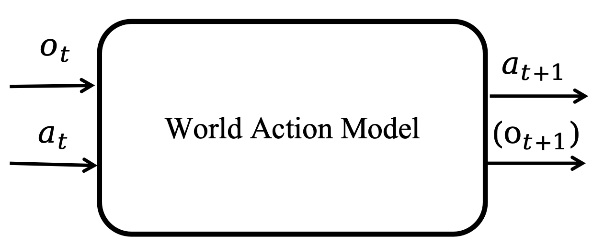

从世界模型到世界动作模型：面向机器人学的简明教程
语言 / Language: English | 中文
本仓库托管论文配套网站与整理后的参考文献列表。本文不是追求穷尽式综述，而是以教程视角建立一个紧凑的架构图景：什么构成一个 world，物理 AI 任务要求策略完成什么，世界模型如何预测未来世界演化，以及世界动作模型如何将这些未来与可执行动作耦合起来。
架构视角
世界（world）是任务相关实体的集合，包括机器人及其环境。物理 AI 任务要求策略在满足任务约束的同时，将世界从初始状态驱动到目标集合。
 |
 |
 |
| World | 物理 AI 任务 | 策略框架 |
世界模型与世界动作模型
世界模型预测未来观测或状态如何在候选动作下演化，通常以当前观测为条件。世界动作模型是一类策略，其动作生成在训练或推理阶段与未来世界演化的模型或表示相耦合。
 |
 |
| 世界模型 | 世界动作模型 |

设计空间
我们首先根据预测发生的空间组织世界模型：
- 观测空间世界模型：直接预测未来观测，例如 RGB 图像、多视角 RGB、RGB-D 帧或点云。
- 状态空间世界模型：先将观测抽象为结构化状态，再在状态空间中建模未来演化。
 |
 |
| 观测空间世界模型 | 状态空间世界模型 |
世界动作模型分类体系
世界动作模型将面向未来的视觉预测与物理决策耦合起来。本文将代表性方法归纳为四种范式：先想象再执行、视频特征条件动作预测、联合视频-动作建模，以及用于策略学习的辅助视频预测。

资源浏览器
配套网站提供了一个与论文分类体系对齐的可筛选论文列表：
https://clearlab-sustech.github.io/WorldModelSurvey/#resources
引用
@article{zhang2026worldactionmodels,
title = {From World Models to World Action Models: A Concise Tutorial for Robotics},
author = {Zhang, Xiaoxiong and Zeng, Xiong and Zhang, Wei},
year = {2026},
note = {Survey manuscript}
}联系
欢迎提出建议、补充遗漏论文、改进分类体系或参与讨论：
12433017@mail.sustech.edu.cn